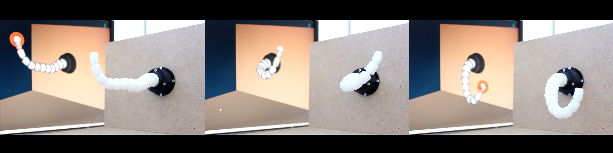

The SoftRobots Components’s Documentation¶
The SoftRobots plugin for SOFA contains components dedicated to soft robotics. You can find for example, models for cable and pneumatic actuations, tools to define trajectories for the robot’s end effector, or tools to communicate with microcontroller boards.
All these components are discribed in this documentation.
